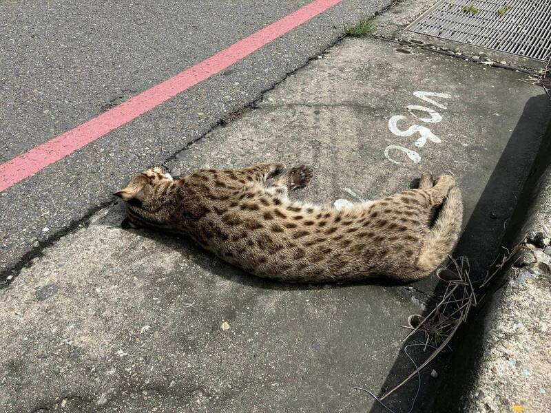

Taiwan Bobcat- Leopard Cat
The leopard cat is the only native feline in Taiwan today, and was also known as the mountain cat in the early days. It is very common, but there may be less than 1,000 of them left in Taiwan today.
Listed as endangered species for conservation.

The leopard cat was killed. by LTN News
The crisis of the survival of leopard cat in Taiwan may be due to the following factors
- Land development leads to habitat loss for leopard cat.
- Competition or Attacks by Loitering Dogs and Cats.
- Leopard cat entering the road and being hit by a vehicle.
- Poisoning or reduction of food in leopard cats caused by pesticides and poisonous baits.
- Leopard cats hunt poultry and livestock and are therefore trapped and killed by humans.
Source of information: Ideographer,Taiwan's disappearing leopard cats, leopardcat.net/endangered.html. Accessed 11 Oct. 2024.
How to protect the leopard cats?
Even if you are not a conservation professional or a leopard cat researcher, you can still contribute to the conservation of leopard cats
- Introducing the leopard cat to friends and relatives.
- If you see the sign of “Beware of leopard cat”, please slow down.
- Not to abandon pets or kill wild animals indiscriminately.
- Donation to relevant conservation organizations.
- Supporting current conservation initiatives and ecologically beneficial products.